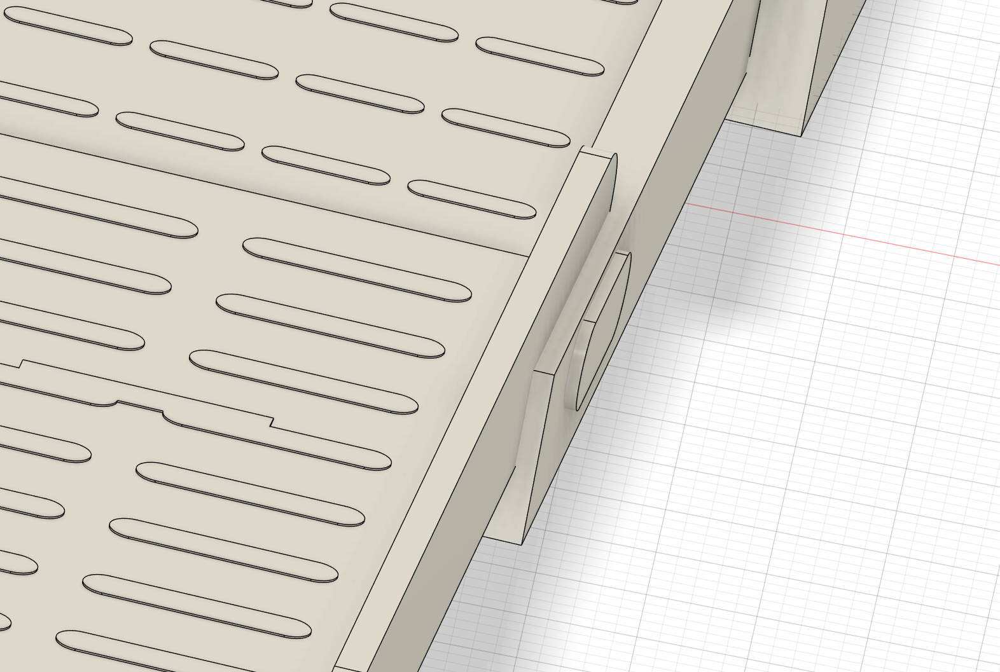
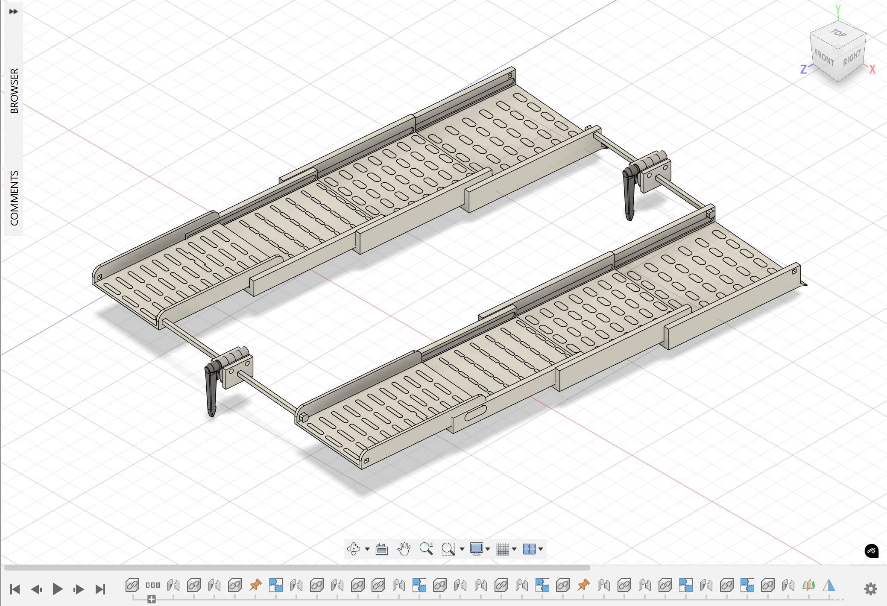
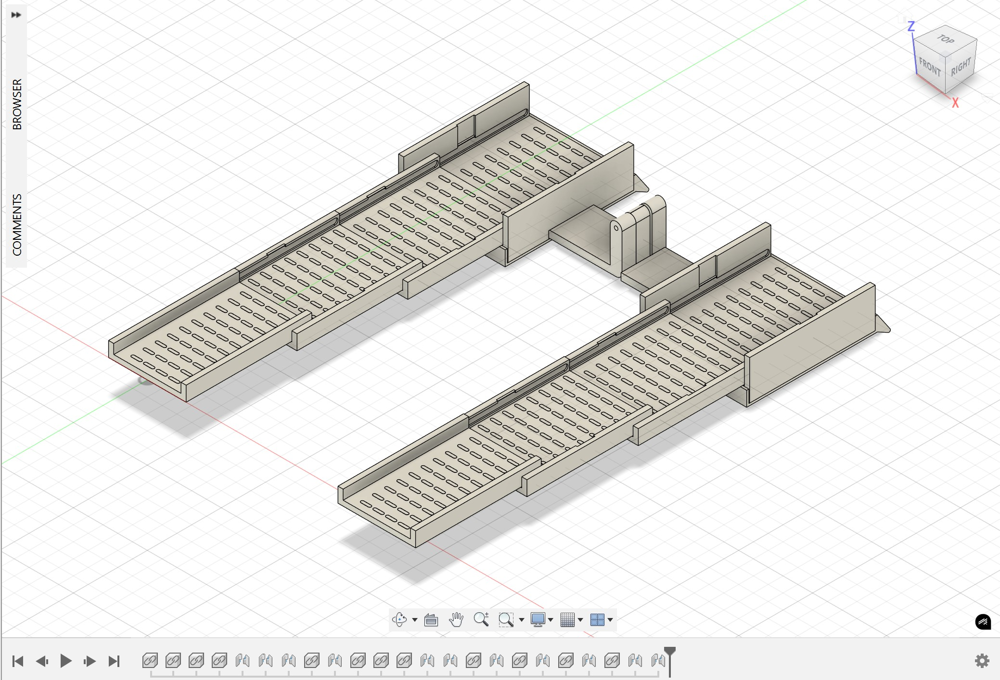
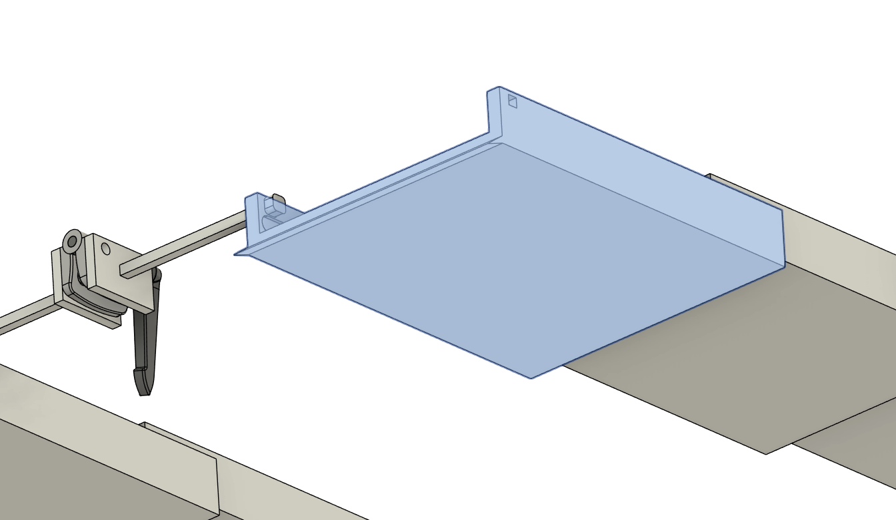
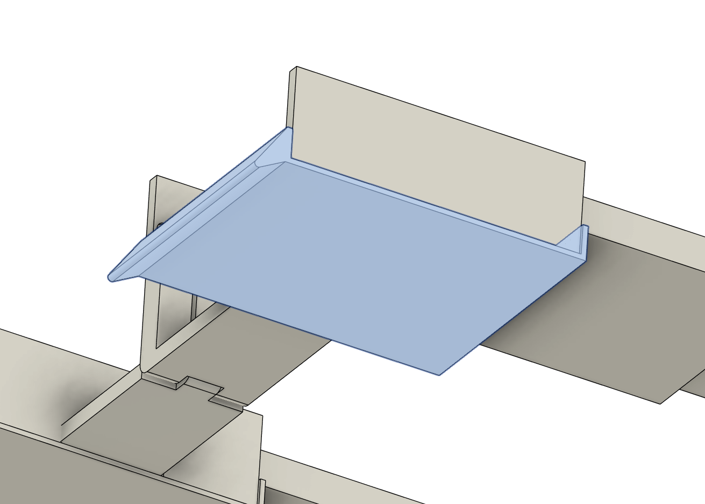
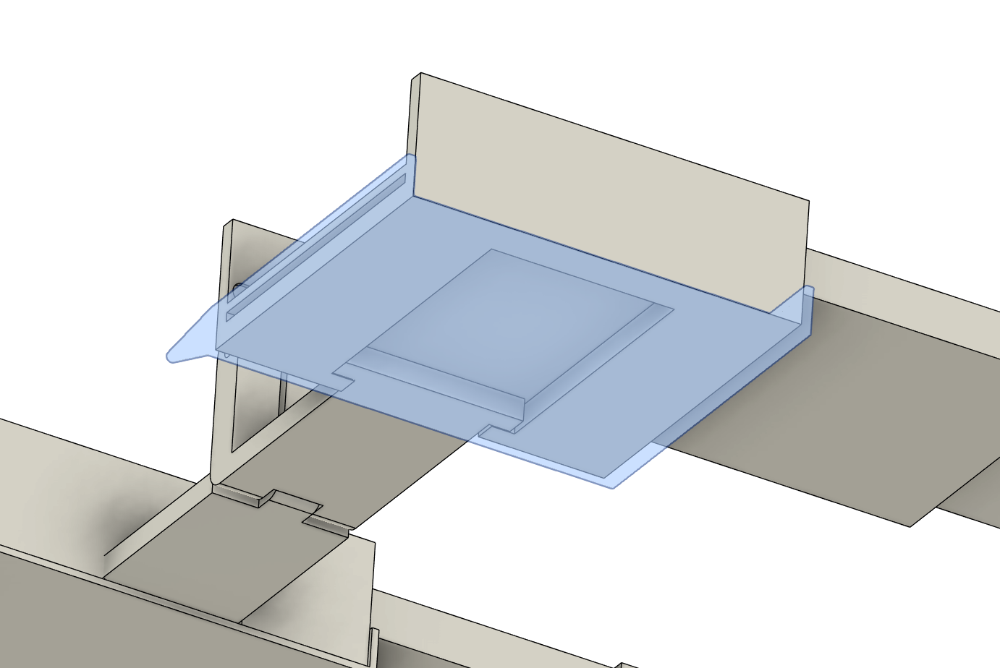
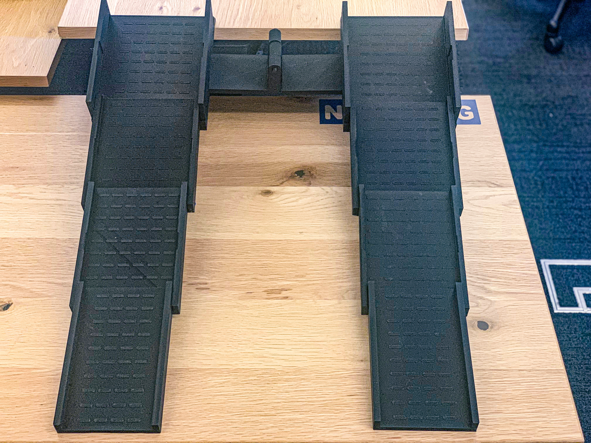
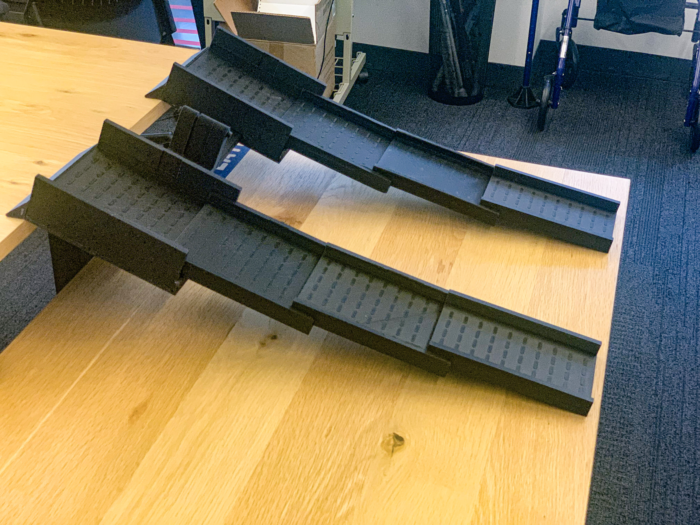

Portable Ramp - PROJECT IN PROGRESS
Project Information
Company: Level The Curve
Task
Create a portable ramp for a manual wheelchair for a 7-inch step.
Deliverables
CAD model and ramp design.
The Project
To create a ramp for a 7-inch step that is portable and lightweight and can withstand a user with a manual wheelchair.
Initial Design
The initial model had dimensions that interfered with each other in the assembly, and did not have a clear method of assembly.
Updating the CAD Model
The previous design was updated to ensure that all parts properly fit each other and are toleranced for 3D printing.
 New Design Features
The side walls were modified to click the plates into place, making assembly and part replacement very simple.

The lip that was attached to the plate was removed and designed as a separate part, which allowed the plate to be 3D printed flat and separate from the more complicated shape of the lip, reducing 3D printing issues. The removable lip was then doubled as a cover for the ramp horizontal extender, making every part extremely easy to assemble, take apart, and redesign if necessary.
 
Prototypes
Due to the size and density requirements of the ramp when 3D printed, it has been difficult to effectively prototype the ramp. Careful monitoring of the prints have been required, and the print times have been long.
 Currently, the ramp is unable to withstand the required weight. There is also considerable curving of the overall ramp which is not a very desirable design.


Ongoing Project
There has been many design challenges, and we are working to make this portable ramp into a working design. Please look out for updates!